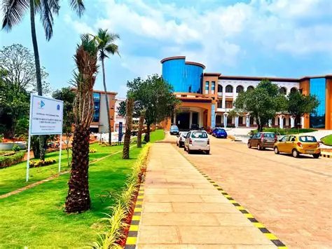

AWH Engineering College (AWHEC), established in 2001, is a self-financing engineering college managed by Association for Welfare of Handicapped (AWH),
Kozhikode, Kerala. It is affiliated to the APJ Abdul Kalam Technological University (KTU) and is approved by All India Council for Technical Education (AICTE).
